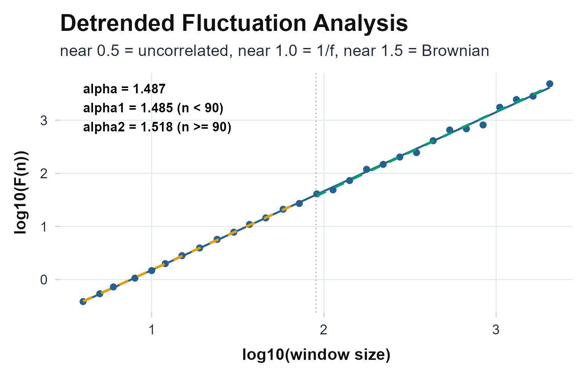
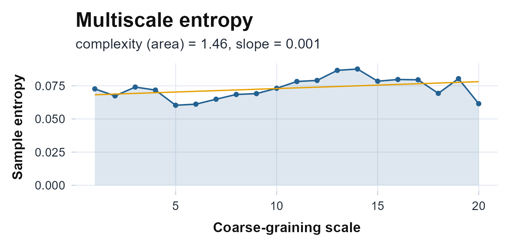

Fractal and nonlinear dynamics
Source:vignettes/articles/fractal-nonlinear.Rmd
fractal-nonlinear.RmdThe idea, and a rule to remember
The fractal and nonlinear metrics ask a different question from the cosinor or the nonparametric battery. Those describe the shape and depth of the average day; the fractal tools describe the temporal texture of the minute-to-minute fluctuations: how this minute’s activity remembers the last, and how that memory stretches across scales from minutes to hours. Healthy activity is neither smooth nor purely random: it carries a self-similar, “1/f” structure, and that structure breaks down in aging and disease in ways the amplitude metrics cannot see (Hu et al., 2009).
The rule to carry through this article: the scaling exponent measures correlation, not size. A signal can be large and regular yet have the same as a tiny one; reports how the fluctuations are organised across time, independent of their amplitude. Read it as the rhythm’s memory, not its strength.
The math
Detrended fluctuation analysis (DFA). Start from activity with mean , and integrate the mean-centred signal into a profile (Hu et al., 2001; Peng et al., 1994): Split into non-overlapping windows of length , fit and remove a least-squares line inside each window, and pool the residuals into the fluctuation If the signal is self-similar, grows as a power law, , and the scaling exponent is the slope of on . The benchmarks are exact: for uncorrelated white noise, for (pink) noise, and for a Brownian random walk.
Multifractal DFA (MF-DFA). A single assumes one scaling law governs the whole signal. MF-DFA relaxes that by weighting the windowed variances by a moment order (Kantelhardt et al., 2002): is the ordinary DFA exponent. If is flat the signal is monofractal; if decreases with the signal is multifractal, and the spectrum width (the spread of Holder exponents) measures how much.
Multiscale entropy (MSE). Complexity is not the same as scaling. Sample entropy counts how unpredictable a series is: the negative log of the chance that two sub-sequences matching for points still match for points, within a tolerance (Richman & Moorman, 2000): MSE computes on coarse-grained copies of the series across scales (Costa et al., 2002). Noise loses entropy as it is averaged; genuinely complex, correlated signals hold their entropy across scales.
Assumptions, and when they break
- A long, gap-free segment. Scaling laws need many octaves of window sizes; all three functions analyse the longest continuous non-NA run and return NA (never an error) on series too short to fit a slope. A few days of minute-level data is the practical minimum.
- Stationary fluctuations, not trends. DFA removes a linear trend inside each window, so a slow drift is tolerated, but a strong embedded rhythm or a device-off step can masquerade as long-range correlation. Gate on wear time first.
- Amplitude-blind, by design. is invariant to scaling the signal, so it complements, never replaces, the amplitude metrics. Report it alongside, not instead of, the cosinor and nonparametric numbers.
- Heavy zeros distort the negative moments. Activity counts have long runs of exact zeros, which give near-zero windowed variances. Raised to a negative power in MF-DFA these blow up, inflating the spectrum width; the side and stay trustworthy.
Recovering known truth
Before trusting on a real recording, watch it recover dynamics whose answer is fixed by construction. We build three series of the same length and variance but different memory: white noise (no correlation, planted ), pink noise synthesised so its power spectrum falls as (planted ), and a Brownian random walk, the running sum of white noise (planted ).
set.seed(42)
n <- 8192
white <- rnorm(n) # planted alpha = 0.5
brown <- cumsum(rnorm(n)) # planted alpha = 1.5
pink <- { # planted alpha = 1.0
amp <- 1 / sqrt(1:(n / 2)) # 1/f amplitude spectrum
ph <- runif(n / 2, 0, 2 * pi)
half <- complex(modulus = c(0, amp), argument = c(0, ph))
Re(fft(c(half, Conj(rev(half[2:(n / 2)]))), inverse = TRUE))[1:n]
}
planted <- c(white = 0.5, pink = 1.0, brown = 1.5)
recovered <- c(white = fractal.dfa(white)$alpha,
pink = fractal.dfa(pink)$alpha,
brown = fractal.dfa(brown)$alpha)
knitr::kable(
data.frame(process = names(planted), planted = planted, recovered_alpha = recovered),
row.names = FALSE, digits = 3,
caption = "DFA recovers the planted scaling exponent: 0.5 for white noise, 1.0 for 1/f, 1.5 for a random walk."
)| process | planted | recovered_alpha |
|---|---|---|
| white | 0.5 | 0.502 |
| pink | 1.0 | 0.997 |
| brown | 1.5 | 1.487 |
The exponent tracks the planted process almost exactly. The fluctuation plot for the random-walk (brown) series shows the scaling directly: a single straight line on log-log axes, whose slope is the exponent.
plot_dfa(brown)
DFA fluctuation curve for the random-walk (brown) series on log-log axes. The slope is the scaling exponent (~1.5 here); one straight line is monofractal scaling.
On a real recording
The bundled recording runs the same way. fractal.dfa()
returns a typed object that prints its own exponents and an interpretive
guide; alpha1 and alpha2 split the short and
long timescales at the breakpoint_min window (90 minutes by
default).
agd <- agd.counts(read.agd(example_agd(1), verbose = FALSE))
dfa <- fractal.dfa(agd$axis1)
dfa
#>
#> Detrended Fluctuation Analysis (Peng et al., 1994)
#>
#> Samples analyzed: 9919
#> Window sizes: 29 (range 4-2479)
#> alpha (overall): 0.9264
#> alpha1 (n < 90): 0.9581
#> alpha2 (n >= 90): 0.8658
#>
#> Guide: near 0.5 = uncorrelated, near 1.0 = 1/f, near 1.5 = BrownianThe overall sits in the 0.9-1.0 healthy band (the signature of intact activity regulation) rather than near the 0.5 of noise or the 1.5 of a random walk.
Reading the numbers
State each exponent in human terms:
- runs from about 0.5 (uncorrelated) through 1.0 (, the healthy target) to 1.5 (random-walk smoothness). Reductions toward 0.5 are reported with aging and Alzheimer’s disease (Hu et al., 2009).
- vs compare memory below and above the breakpoint; a drop from short to long timescales is a crossover, common in activity where the circadian band changes the scaling.
- Spectrum width (MF-DFA) is near zero for a monofractal and grows with multifractality; read it only on the side for raw counts.
- Complexity / area (MSE) is the entropy summed across scales: higher means the signal stays unpredictable even when smoothed, the hallmark of physiological complexity rather than noise.
A useful pairing is with the MSE slope: scaling and sustained entropy across scales together say “complex and healthy”, which neither number asserts alone.
The wider fractal and nonlinear family
From one exponent to a spectrum.
mfdfa() asks whether a single scaling law fits, or
whether different-sized fluctuations scale differently. We contrast a
monofractal signal (white noise, one law) against a
multifractal one (a binomial multiplicative cascade,
the textbook multifractal): the spectrum width separates them cleanly
while
stays interpretable as the DFA exponent.
set.seed(7)
mono <- rnorm(8192)
cascade <- Reduce(function(v, .) as.numeric(rbind(v * 0.3, v * 0.7)),
1:13, accumulate = FALSE) # binomial multiplicative cascade
multi <- cascade / sd(cascade)
knitr::kable(
data.frame(
signal = c("monofractal (white noise)", "multifractal (cascade)"),
h2 = c(mfdfa(mono)$alpha_dfa, mfdfa(multi)$alpha_dfa),
width = c(mfdfa(mono)$width, mfdfa(multi)$width)
),
col.names = c("signal", "h(2)", "spectrum width"),
row.names = FALSE, digits = 3,
caption = "A narrow spectrum width flags a monofractal; a wide one flags multifractality."
)| signal | h(2) | spectrum width |
|---|---|---|
| monofractal (white noise) | 0.495 | 0.131 |
| multifractal (cascade) | 0.806 | 1.228 |
On the real recording, MF-DFA confirms the DFA exponent through ; the raw width is inflated by the zero-variance windows noted above, so we report as the reliable summary.
Complexity across scales.
multiscale.entropy() applies sample entropy to
coarse-grained copies of the recording, separating signals that stay
complex when smoothed from noise that loses entropy with scale.
mse <- multiscale.entropy(agd$axis1, scales = 1:20)
mse
#>
#> Multiscale Sample Entropy (Costa et al., 2002)
#>
#> Samples analyzed: 9919
#> Scales: 20 (1-20)
#> SampEn @ scale 1: 0.0729
#> Complexity (area): 1.4762
#> Slope (mse on scale):0.0006
#>
#> Negative slope => noise-like; flat/positive => complex
ggplot(data.frame(scale = mse$scales, sampen = mse$mse),
aes(scale, sampen)) +
geom_line(colour = "grey60") +
geom_point(colour = "#236192", size = 2) +
labs(x = "scale (tau)", y = "sample entropy") +
theme_actiRhythm()
Sample entropy across coarse-graining scales. A flat or rising curve is the signature of physiological complexity; a curve that falls toward zero is noise-like.
The complexity index (area, the entropy summed across
scales) condenses that curve to a single number for comparison between
recordings.
Limitations
- Data hunger. Scaling exponents are unstable on short or gappy series; the functions fall back to the longest clean run and return NA when even that is too short. Treat from under a few days with caution.
- Embedded rhythm leaks into the slope. A strong 24-hour component adds curvature to the log-log plot near the daily scale; the split exposes it, but a single pooled can hide it.
- Negative-moment fragility. MF-DFA spectrum width on raw activity counts is inflated by zero-variance windows; lean on and the side, or pre-process the zeros, before reporting .
- Complementary, not diagnostic. A reduced is a marker, not a diagnosis; interpret it next to the amplitude, timing, and fragmentation metrics, never in isolation.
Reference and validation
DFA follows Peng et al. (1994) with the activity-specific framing of Hu et al. (2001; Hu et al., 2009); the multifractal generalisation is Kantelhardt et al. (2002); and multiscale entropy combines the sample-entropy estimator of Richman & Moorman (2000) with the multiscale construction of Costa et al. (2002). actiRhythm’s DFA and MSE are implemented in base R against these reference algorithms and exercised against their known limits ( for white noise, for a random walk, entropy declining with scale for noise) in the package’s test suite; see also the Validation article.